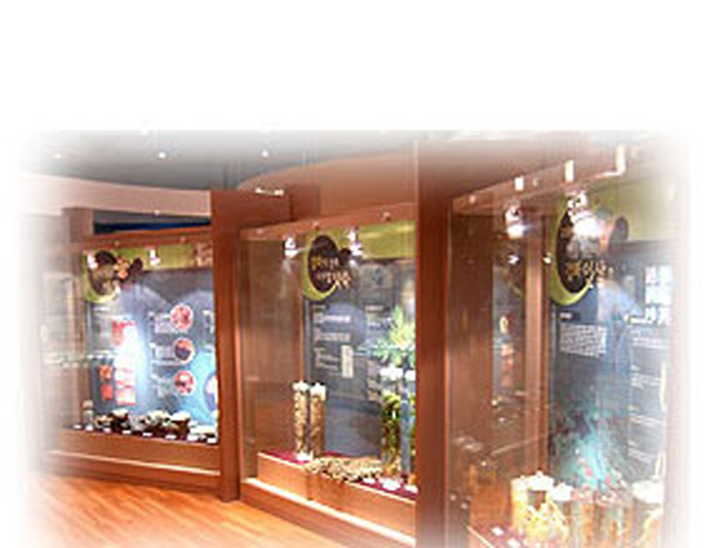
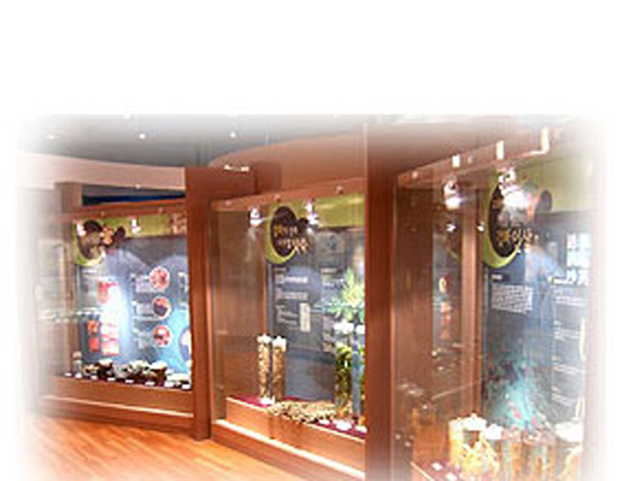

상세보기

강화군농경문화관
 

강화군 농경문화관은 과거?현재?미래의 농경모습을 생동감있게 구현하여 방문객에게 차별화된 볼거리를 제공하며 특히 대도시 주민과 학생들의 농촌체험학습을 적극 연결하므로써 농업인들의 실질적 소득증대 효과를 거양하기 위해 건립하였으며 2003년 6월 12일 개관한 이후 해마다 방문객수가 늘어나고 있다. 지금까지 방문객 대상으로 시대를 넘나드는 농경과 농기자재에 대한 정보와 지식을 제공하고 또한 자라나는 세대에게 농업의 공익적 기능 등 소중한 가치를 교육하는 공간으로 자리잡아 가고 있다. 또한 초중고생의 현장체험학습과 대도시 주부 등 소비문화를 선도하는 계층들의 관심사인 농촌체험 활동 즉, 감자캐기, 고추따기, 고구마캐기, 순무체험 등 사계절 가능한 프로그램을 농업인들의 자생조직인 각 품목별 연구회 등에 연결시킴으로써 농경문화관이 그 역할의 진가를 보여주고 있다. 특히 이곳 농경문화관은 수도권 소비자들을 대상으로 맛있는 강화농산물에 대한 입체적인 홍보 등 신뢰할 수 있는 농산물 판촉장 역할을 수행하는 가운데 향후 점증하는 직거래 수요에 적극 대응하며 농업인과 수도권 소비자간의 지속적인 도농교류를 실현하는 가교로의 자리매김을 하고 있다.
소재지 : 인천광역시 강화군 불은면 중앙로 742-2 (삼성리)